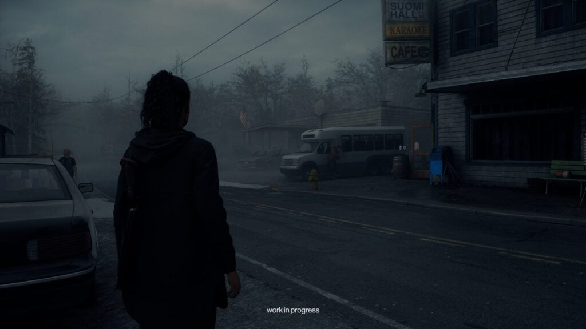
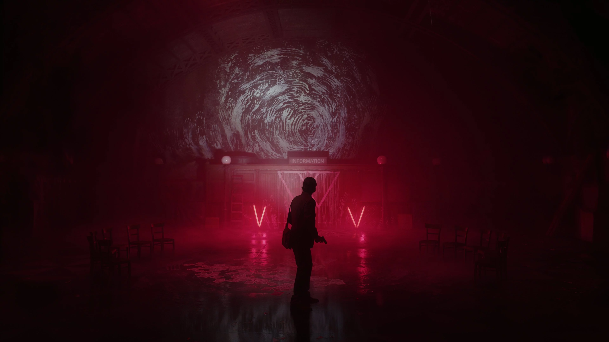

ALAN WAKE II


×
Chapter 1: Invitation
FBI 요원 사가 앤더슨은 워싱턴 주 브라이트 폴스 인근 호수에서 발견된 의문의 변사 사건을 조사하기 위해 파견된다. 시신 주변에는 현실과 맞지 않는 이상한 흔적들이 남아 있고, 사가는 현지 보안관 팀 브레이커와 함께 수사에 착수한다.
한편 어두운 장소(The Dark Place)에 갇혀 13년을 보낸 앨런 웨이크는 그 공간을 탈출하기 위해 자신이 직접 이야기를 써 내려가기 시작한다. 그가 쓰는 글이 현실에 영향을 미친다는 사실을 깨닫고, 탈출을 위한 서사를 구성해 나간다.
두 인물의 시선이 교차하며 브라이트 폴스를 둘러싼 초자연적 사건의 실체가 서서히 드러나기 시작한다.
×
Chapter 2: The Heart
사가는 브라이트 폴스 외곽의 커들턴 레이크 주변을 집중 수사하며 더 깊은 진실에 접근한다. 호수 주변에 얽힌 오래된 전설과 어둠의 힘이 이 지역과 특별한 연결을 맺고 있다는 것을 서서히 깨닫기 시작한다.
한편 어두운 장소에 갇힌 앨런 웨이크는 새로운 이야기의 단서를 발견한다. 그가 써 내려가는 이야기가 사가의 수사와 점점 교차되면서, 두 사람이 서로 다른 차원에서 같은 진실을 향해 나아가고 있음이 드러난다.
지역 주민들 사이에서 발견된 앨런의 소설 원고 파편들은 단순한 공포 소설이 아니라, 현실을 바꾸는 힘을 지닌 예언적인 글임이 밝혀지기 시작한다.
×
Chapter 3: Local Girl
브라이트 폴스 토착 문화와 얽힌 어두운 비밀이 드러난다. 사가는 지역 주민 중 일부가 '말씀의 숭배단'이라는 비밀 조직에 연루되어 있음을 발견한다. 그들은 앨런의 글에 초자연적인 힘이 깃들어 있다고 믿으며 수년간 어둠을 숭배해왔다.
지역 소녀의 실종 사건과 변사 사건이 연결되어 있음을 확인한 사가는, 이 조직이 오랫동안 브라이트 폴스에서 암약해왔음을 직감한다.
팀 브레이커는 사가에게 13년 전 앨런 웨이크의 첫 번째 사건 당시 자신도 현장 근처에 있었다는 사실을 고백한다. 과거와 현재가 이어지면서 사건의 전모가 조금씩 윤곽을 드러낸다.
×

Chapter 4: No Chance
수사가 깊어질수록 사가는 점점 더 많은 테이큰(Taken), 즉 어둠에 잠식당한 사람들과 맞닥뜨리게 된다. 한때 평범한 주민이었던 사람들이 적대적 존재로 변한 현실 앞에서, 사가는 단순한 수사를 넘어 생존 자체와 싸워야 하는 상황에 놓인다.
엘더우드 팰리스 호텔에서 발견된 단서들은 앨런 웨이크의 과거 행적과 직결된다. 그가 첫 번째 사건 이후 작성한 것으로 추정되는 원고가 발견되며, 그 내용은 현재 사가가 겪고 있는 사건들을 예언하듯 묘사하고 있다.
팀은 이 사건이 단순한 살인이나 실종이 아닌, 브라이트 폴스 전체를 삼키려는 어둠의 거대한 계획의 일부임을 직감한다.
×

Chapter 5: Old Gods
북유럽 신화를 모티프로 한 하드록 밴드 '아스가르드의 고대 신들'의 전설적인 형제 뮤지션 토르와 오딘 앤더슨이 이야기의 핵심으로 등장한다. 그들의 음악에는 어둠의 힘을 억누르는 고대의 힘이 깃들어 있으며, 브라이트 폴스를 둘러싼 초자연적 사건과 깊이 연루되어 있다.
사가는 앨런이 쓴 이야기가 자신의 수사 과정과 놀랍도록 정확하게 일치한다는 사실을 깨닫는다. 앨런은 어두운 장소에서 사가의 행동을 '쓰고' 있었고, 그의 글이 현실을 형성하는 데 직접적인 영향을 미치고 있었다.
현실과 이야기의 경계가 점점 무너지면서, 브라이트 폴스 전체가 앨런의 소설 속 세계로 빨려드는 것 같은 기묘한 감각이 사가를 엄습한다.
×
Chapter 6: Scratch
앨런 웨이크의 어두운 분신이자 어두운 장소가 만들어낸 존재, '스크래치(Scratch)'가 마침내 현실 세계에 완전히 모습을 드러낸다. 앨런의 얼굴과 목소리를 지니고 있지만 그의 내면을 완전히 잃어버린 스크래치는, 브라이트 폴스를 영구적인 어둠으로 뒤덮으려 한다.
사가는 스크래치를 막기 위해 앨런이 남긴 이야기의 단서들을 하나씩 맞춰가며 최후의 결전을 준비한다. 마인드 플레이스 속에서 그녀는 앨런이 처음부터 이 순간을 위해 이야기를 써왔다는 것을 깨닫는다.
어둠과 빛, 이야기와 현실, 그리고 두 사람의 운명이 교차하는 최후의 순간, 브라이트 폴스의 진실이 마침내 모습을 드러낸다.